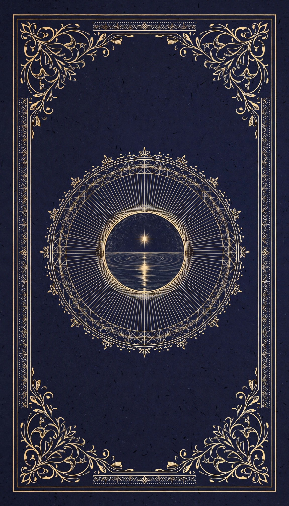

78 Reflections
Seventy-eight reflection cards for self-discovery, each with its own artwork. Shuffle, draw a card, sit with its prompt, and write. Nothing leaves this browser unless you print or copy it.

Reflection deck
Draw a card to begin.
Sigil and Scribe
Entries are stored only in this browser (localStorage). Clearing site data or switching devices will remove them. This is a reflection tool, not therapy or medical advice.